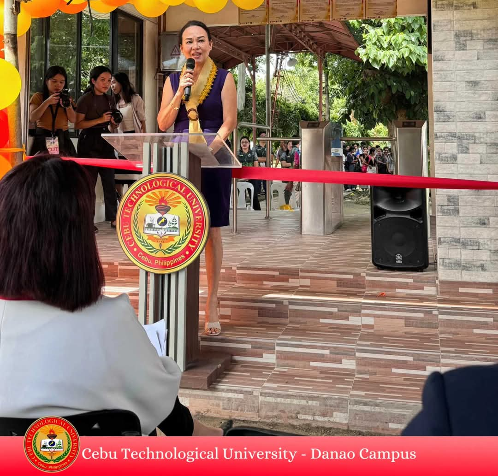

Cebu Technological University-Danao Campus is officially embracing the future with a brand-new Radio Frequency Identification (RFID) system! The launch was celebrated with a ribbon-cutting ceremony on September 18th, bringing together the campus director, local officials, Globe Telecom representatives, alumni, parents, faculty, staff, and students.

The new RFID system is designed to make life easier and safer for everyone on campus. It will help speed up things like checking in for classes and tracking attendance, making sure everyone is where they need to be. It will also improve security by keeping tabs on campus resources.
Campus Director Dr. Rose Mary L. Almacen said the RFID system is a big step forward for the university, creating a more efficient and secure environment for everyone. Danao City Mayor Thomas “Mix” Durano also praised the initiative, highlighting the partnership between the city and the university in creating a technologically advanced learning environment.
Globe Telecom, a partner in this project, expressed their commitment to empowering educational institutions with technology, saying they're excited to see how the RFID system will improve learning and administration.
The new RFID system is expected to create a smoother and more engaging experience for everyone at CebuTech Danao, making it a truly modern and innovative campus.